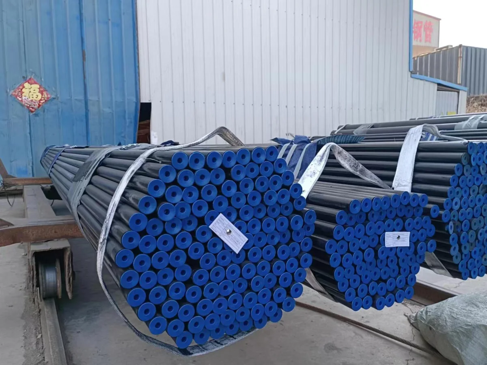
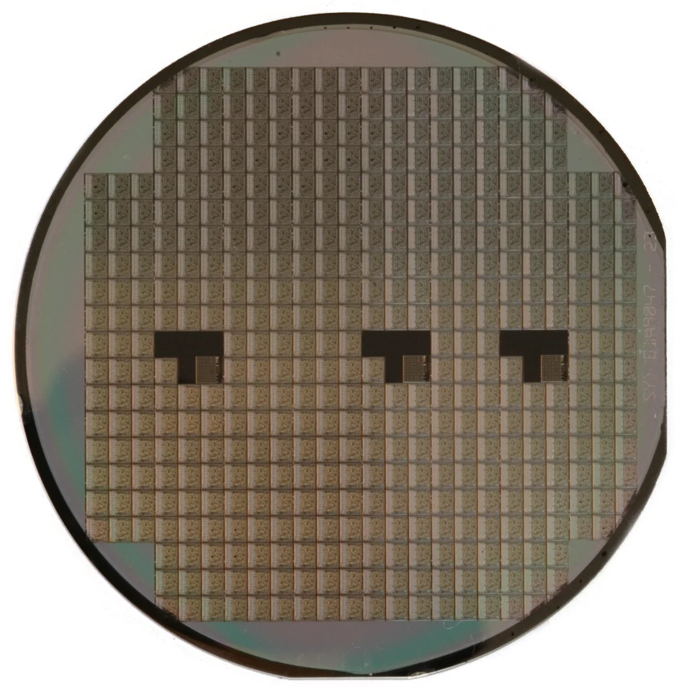

汽车
把目标硬化层和表面要求落实到产线的气氛、温度与批次记录。
- 硬化层深与硬度
- 碳势稳定性
按行业查看典型零部件、关键工艺参数与控制要求。
把目标硬化层和表面要求落实到产线的气氛、温度与批次记录。

从客户规范出发，把测量、记录与审核要求落实到可追溯的工艺流程。

结合材料、目标硬化层和允许变形，对比深层渗碳与可控渗氮。

从材料、炉型和目标表面状态出发，确定供气方案和热工艺曲线。

明确温度曲线、工艺气氛、洁净度和批次记录要求，再评估控制系统的集成方式。
把材料、炉型和目标结果告诉 Gauss 工程师。